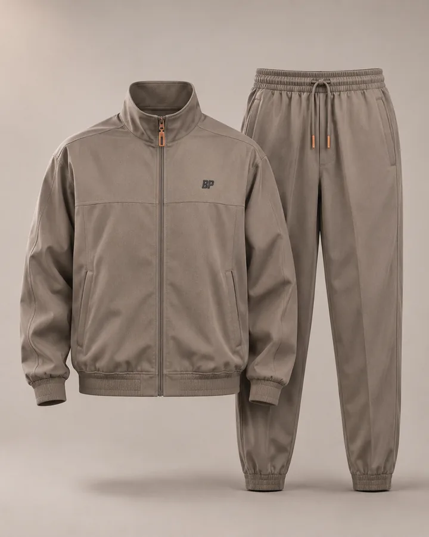

Locations

Charlotte, North Carolina
Online First. Everyday Everywhere.
Our fictional home base is Charlotte, North Carolina. Its mix of campus life, neighborhood walks, and casual sport is the setting for the brand: clothing that does not need a special occasion to make sense.
The concept is online-first. There is no physical shop, public studio, pickup counter, or walk-in fitting room. We do not publish a street address or map because there is no customer-facing location to visit.
- Home Base
- Charlotte, NC, United States
- Where to Explore
- Our online collections
- In-Person Visits
- No storefront or pickup service
- Shipping
- No real orders or shipping offered
Looking for Help With Fit? The size guide is always available to browse.
Open the Fit Guide